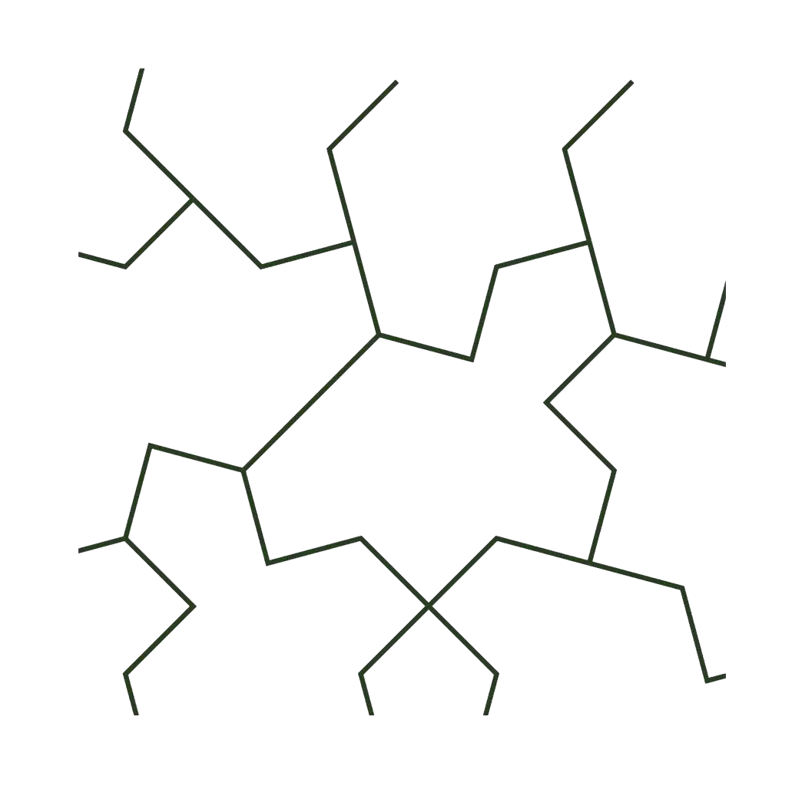

AngraMyNew
창조와 아름다움, 존재의 본질에 관한 탐구
서문
“파괴를 넘어, 아름다움으로 세계를 만든다.”
이름의 의미
AngraMyNew = Angra Mainyu + My + New 파괴의 신으로부터, 나의 새로운 세계로.
’앙그라마이뉴(Angra Mainyu)’는 조로아스터교의 파괴신이지만, 이 이름을 새롭게 재해석한다. 파괴는 창조의 서곡이며, 모든 인간 안에는 새로운 세계가 태어난다.
기원
AngraMyNew는 파괴에서 출발하지만, 목적은 창조에 있다. 낡은 신념을 무너뜨리되, 그 자리에 새로운 아름다움의 질서를 세운다. 세상을 해체하는 것이 아니라, 다시 조합하는(Recomposition) 것이다.
정신적 원천
니체처럼, 스스로 가치를 창조하는 초인(Übermensch)이 된다.
5인의 선현처럼, 자기 자리에서 죽는다:
- 김옥균 — 시대를 앞서간 혁명가, 상하이에서 암살당하다
- 마광수 — 금기를 파괴한 예술가, “아름답지 않느냐”를 끝까지 외치다
- 허균 — 홍길동을 쓴 저항자, 능지처참당하다
- 성재기 — 소신을 굽히지 않은 투사, 한강에서 산화하다
- 존 로 — 200년 앞서간 금융 천재, 베네치아에서 빈곤하게 죽다
맹상군처럼, 쓸모없어 보이는 자도 품는다.
“인생이란 곧 죽을 자리를 찾아 떠나는 여행이다.”
믿음
“모든 인간은 예술가이며, 예술은 곧 새로운 윤리이자 문명이다.”
누구나 창조적 의지를 지닌 존재다. 각자의 개성이 곧 세계의 일부이며, 그 다양성이 모여 하나의 끝없는 비대칭적 아름다움을 만든다.
상징

로고는 아인슈타인 타일(Einstein Tile)에서 영감을 받았다.
2023년, 영국의 아마추어 수학자 데이비드 스미스가 60년 수학 난제를 풀었다: “단 하나의 모양으로, 패턴 반복 없이, 무한한 평면을 채울 수 있는가?”
그가 찾은 13각형 타일은 “아인슈타인(ein + stein, 하나의 돌)”이라 불린다.
- 하나의 모양: 인간의 보편적 본질
- 패턴 반복 없음: 똑같은 인간은 없다
- 무한 확장: 끝나지 않는 창조로 세계가 채워진다
“60년간 불가능하다고 여겨진 것을, 아마추어가 증명했다.”
3대 공리
세 가지 공리 위에 이 구조를 세운다.
파괴의 공리 — 자기정화의 원칙
“내 자신을 파괴한다. 타인을 파괴할 필요는 없다.”
칼날은 밖을 향하지 않는다. 베어야 할 것은 내 안의 낡은 살점뿐이다. 그러나 시대가 길목을 막아선다면, 선현들처럼 부서질지언정 뚫고 간다.
창조의 공리 — 절대적 아름다움의 원칙
“파괴한 틈을 절대적 아름다움으로 채운다.”
꽃은 벌과 다투지 않는다. 다만 피어날 뿐이다. 작품이 아름다우면, 세상은 스스로 기울어 온다.
확장의 공리 — 데뷔의 원칙
“나의 ’My’를 완성했다면, 타인의 ’My’를 인정하고 데뷔시킨다.”
맹상군의 문객 삼천은 쓸모로 뽑힌 자들이 아니었다. 닭 울음 흉내와 개 도둑질이 결국 주인을 살렸다. 특이점들을 구속 없이 품어 각자의 무대에 세운다.
목표
AngraMyNew는 사상이자 실험이며, 동시에 예술운동이다. 인간을 구원하지 않는다. 대신 스스로 창조자가 될 용기를 선물한다.
AngraMyNew — The Rebirth of Conscious Civilization. “모든 창조자는 자신의 신이 된다.”
주제가
AngraMyNew의 철학을 가장 잘 담은 노래:
지코 (ZICO) - Artist
“너는 Artist”
이 한 마디가 AngraMyNew의 핵심이다. 모든 인간은 창조자이며, 창조 자체가 삶의 방식이다.